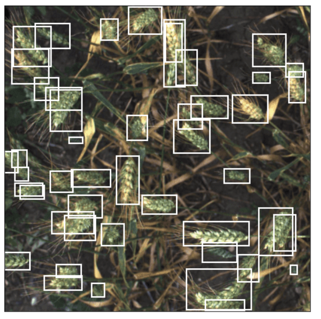

2.4 麦穗检测案例-FasterRCNN¶
学习目标
- 了解麦穗检测的数据集的构成
- 理解项目解决的全流程
- 能够利用fasterRCNN网络模型进行训练和预测
1. 麦穗检测项目简介¶
小麦是我国最重要的粮食作物之一，其不仅关乎着人们日常的饮食需求，同时影响着国民经济的发展和社会稳定。随着智能技术的不断发展，智慧农业对粮食的生产起着重要的作用，一些智能技术对传统农业起到重大的推动作用。
麦穗识别在智慧农业中有较高的应用价值，如粮食产量估计、种子筛选、和种子基因性能等。许多研究人员主要关注智慧农业和麦穗计数。传统麦穗计数主要依靠人工视觉进行主观辨别和判断。该方法具有简单、方便等特点，但需要大量的人力物力效率低下、人的主观因素较多。随着图像识别技术的发展，人们借助智能算法替代传统的计数方法。在对麦穗图像进行精准检测时会遇到视觉上的挑战，如小麦植株重叠，风动下的模糊图像。这些问题加剧了识别单个小麦头的难度。为了克服这些干扰的因素，将计算机技术与农业深度融合，结合图像处理基本技巧，利用深度学习中的神经网络设计一套基于Faster R-CNN的麦穗图像识别算法，用其对大田下小麦的数量、密度、大小等参数预估。小麦管理决策者可运用这些数据进行小麦生产过程的智能决策和精确管理，为小麦的智能识别监控系统提供理论依据和技术支持。
2. 麦穗数据集介绍与数据分析¶
小麦图像数据集来自Global Wheat Head detection (GWHD) dataset，其是第一个从现场光学图像进行小麦头检测的大型数据集，包括多个地区的不同品种，涵盖了由欧洲(法国，英国，瑞士)，亚洲(中国，日本)，大洋洲(澳大利亚)和北美(加拿大)的标注图像。所有图像的通用格式为1024 × 1024 px，分辨率为每像素0.1~0.3 mm。本文研究的是不同品种小麦头的密度和大小，部分图像如下图所示：
这些数据存放在wheatData文件夹中，其中包括训练集和测试集数据，以及相应的标注信息，如下图所示：
2.1 数据读取¶
首先我们使用pandas读取train_data.csv文件，该部分代码在文件：fasterRCNN_code/dataset_utils.py中。
# 数据获取与分析:指定训练集和验证集的路径
train_data_dir = 'wheatData/train'
test_data_dir = 'wheatData/test'
# 读取CSV文件
train_data_label = pd.read_csv('wheatData/train_data.csv')
print(train_data_label.head())
结果为：
其中每一行表示图像中的一个标注框如下图白色方框所示：

主要内容包括：
- image_id：图像文件的名称，指当前标注框所在的图像
- width和height: 图像的宽高，在当前数据集中，所有图片的大小均为1024x1024
- x和y: 表示当前标注框的左上角坐标
- w和h: 表示标注框的宽和高。
对应的图片数据都存放在train文件夹中，test中的图片是测试图像，未进行标注
2.2 数据分析¶
2.2.1 数据量的分析¶
该部分代码在文件：fasterRCNN_code/dataset_utils.py中。
- 标注框的数量
# 训练数据大小（这里指的是目标框）
print("目标框个数：{}".format(train_data_label.shape))
结果为：
目标框个数：(147793, 9)
训练集中一共标注了147793个目标框
- 训练集图片的数量
# 有标注信息图片的数量
print("图片数量：{}".format(train_data_label['image_id'].nunique()))
# 所有图片的数量
print("所有图片数量：{}".format(len(os.listdir(train_data_dir))))
结果为：
图片数量：3373
所有图片数量：3422
说明有 3422-3373=49 张图片没有标注，所以后面进行模型训练时我们只能选择标注信息的图片进行训练。
2.2.2 数据分布的分析¶
该部分代码在文件：fasterRCNN_code/dataset_utils.py中。
- 图片中目标框数量分布
counts = train_data_label['image_id'].value_counts()
print("单张图片中标注框的最大值{}和最小值{}".format(max(counts), min(counts)))
sns.displot(counts, kde=True, color="g")
plt.xlabel('boxes')
plt.ylabel('images')
plt.show()
结果为：
单张图片中标注框的最大值116和最小值1
从上图中我们可以看出每张图片中的标注框个数在20-80之间，如果在检测时与该范围相差较大则需要进行核查是否出现问题。
- 标注框位置左上角坐标的分布
# 标注框左上角坐标的分布
sns.histplot(data=train_data_label, x='x', y='y', bins=50, pmax=0.9)
plt.xlabel('x')
plt.ylabel('y')
plt.show()
结果如下图所示：
从上图中我们可看出坐标x,y的范围在0-1000之间，且每一部分的分布都比较均匀，所以可以判断出目标框有可能会出现在图像的任意位置。
- 标注框位置中心点坐标的分布
# 获取数据的中心点坐标
train_data_label['cx'] = train_data_label['x'] + train_data_label['w'] / 2
train_data_label['cy'] = train_data_label['y'] + train_data_label['h'] / 2
# 绘制分布图像
sns.histplot(data=train_data_label, x='cx', y='cy', bins=50, pmax=0.9)
# 设置轴描述
plt.xlabel('cx')
plt.ylabel('cy')
plt.show()
结果如下图所示：
从上图中我们可看出坐标cx,cy的范围在0-1000之间，且每一部分的分布都比较均匀，所以可以判断出目标框有可能会出现在图像的任意位置。
- 标注框的宽高的分布
# 标注框宽高的分布
sns.histplot(data=train_data_label, x='w', y='h', bins=50, pmax=0.9)
# 轴描述
plt.xlabel('w')
plt.ylabel('h')
plt.show()
结果为：
从上图中我们可看出标砖框宽高的范围在0-1000之间，主要集中在0-400之间，比例集中在1：1，这可以作为anchor设置的依据，
- 标注框面积的分布
# 标注框面积的分布：用来设置anchor的尺度
aeras = train_data_label['w'] * train_data_label['h']
print("目标框最小面积为{}最大面积为{}".format(min(aeras), max(aeras)))
sns.histplot(aeras, bins=50, kde=False)
plt.show()
结果如下所示：
从图中可以看出，标注框的面积集中在0-5000以下，可以用来筛选异常的检测框。
2.2.3 数据展示¶
该部分代码在文件：fasterRCNN_code/dataset_utils.py中。
# 图片及标注框预览
# 设置坐标轴的个数
num_rows, num_cols = 1, 2
# 获取标注信息
ids = train_data_label['image_id'].unique()[100:100 + num_rows * num_cols]
# 读取图片
imgs = [plt.imread(f'{train_data_dir}/{n}.jpg') for n in ids]
# 图片显示
axes = show_images(imgs, num_rows, num_cols)
# 显示标注框
for ax, id in zip(axes, ids):
datas = train_data_label[train_data_label['image_id'] == id]
bboxes = [(d['x'], d['y'], d['x'] + d['w'], d['y'] + d['h']) for _, d in datas.iterrows()]
show_bboxes(ax, bboxes, labels=None, colors=['r'])
plt.show()
在这里我们将标注框绘制在相应的图片上，结果如下图所示：
3.数据加载DataSet的构建¶
在这里我们继承 torch.utils.data.Dataset 抽象类，实现__init__ __len__ __getitem__ 。
其中：
__init__方法进行参数的初始化，包括__len__方法获取数量集中图片的数量-
__getitem__获取数据： -
image: 图像数据
- target: 字典数据，包括模型训练时的目标值信息，介绍如下：
boxes: 表示标注框的左上角坐标和右下角坐标[x0, y0, x1, y1]。label: 标志标注框的类别，在当前任务中只有小麦一个类别，所以所有标注框的类别标签值设为1
该部分代码在文件：fasterRCNN_code/dataset.py中，代码实现如下所示：
# 数据读取类
class Wheat(Dataset):
# 初始化
def __init__(self, dataframe, image_dir, phase='train', transforms=None):
'''
:param dataframe: 数据标注结果
:param image_dir: 图像路径
:param phase: 训练阶段train或预测阶段test
:param transforms: 图像增强处理
'''
super().__init__()
# 数据标注的CSV结果
self.df = dataframe
# 图像路径
self.image_dir = image_dir
# 阶段信息
self.phase = phase
# 图像增强方法
self.transforms = transforms
# 图像文件名称：去重之后的结果
self.image_id = dataframe["image_id"].unique()
# 获取数据的数量
def __len__(self):
return len(self.image_id)
# 获取每一幅图片
def __getitem__(self, idx):
# 获取图像信息
image_id = self.image_id[idx]
image = plt.imread(f'{self.image_dir}/{image_id}.jpg').astype(np.float32) / 255.0
# 训练阶段
if self.phase == 'train':
# 根据图像的名称获取对应的标注信息
records = self.df[self.df['image_id'] == image_id]
# 获取目标框
boxes = records[['x', 'y', 'w', 'h']].values
# 获取目标框的右下角坐标
boxes[:, 2] = boxes[:, 0] + boxes[:, 2]
boxes[:, 3] = boxes[:, 1] + boxes[:, 3]
# 每一框的类别为小麦，设为1（因为只有一个类别）
labels = torch.ones((records.shape[0],), dtype=torch.int64)
# 设置目标值信息，目标值存放在target字典中：目标框的位置，目标类别值
target = {}
target['boxes'] = boxes
target['labels'] = labels
# 增强处理
if self.transforms:
# 增强的内容包括：图像，框和类别
sample = {
"image": image,
'bboxes': target["boxes"],
"labels": labels
}
# 将sample字典中的key和value解包为key=value的方式传输到数据增强方法中
sample = self.transforms(**sample)
# 获取增强后的图像
image = sample["image"]
# 对图像中的标注框坐标进行拼接，并调整成n*4的维度,n表示图像的目标框的数量
target['boxes'] = torch.stack(tuple(map(torch.tensor, zip(*sample['bboxes'])))).permute(1, 0)
# 返回增强后的图像，目标值和对应的图像名称
return image, target, image_id
# 预测阶段
else:
# 预测阶段只需对图像进行处理，没有目标值
if self.transforms:
sample = {"image": image}
sample = self.transforms(**sample)
image = sample['image']
return image, image_id
@staticmethod
def get_transform():
# 训练阶段图像增强进行翻转（注意框也会随之变换）和类型的转换
return A.Compose([
A.Flip(0.5),
ToTensor()
], bbox_params={'format': 'pascal_voc', 'label_fields': ['labels']})
@staticmethod
def get_test_transform():
# 预测时只需要进行类型的转换
return A.Compose([
ToTensor()
])
接下来我们以训练集数据为例，来看下输出的结果：
if __name__ == "__main__":
# 获取数据和标签信息
train_data_dir = 'wheatData/train'
train_data_label = pd.read_csv('wheatData/train_data.csv')
# 实例化数据获取类
train_dataset = Wheat(train_data_label,train_data_dir)
# 遍历图像进行显示
datas = [train_dataset[i] for i in range(10,12)]
# 获取图像数据（CHW-》HWC）
imgs = [d[0].permute(1, 2, 0).numpy() for d in datas]
# 图像展示
axes = show_images(imgs, 1, 2)
# 标注框展示
for ax, (image, target, image_id) in zip(axes, datas):
show_bboxes(ax, target['boxes'], colors=['w'])
plt.show()
输出结果如下所示：
4.模型训练¶
4.1 模型构建¶
在这里我们构建fasterRCNN的模型的来进行麦穗检测，该部分代码在文件fasterRCNN_code/train.py中，详细介绍如下：
- 首先我们利用torchvision创建Faster RCNN的预训练模型，如下所示：
# 创建模型，使用torchvision中的fasterRCNN模型，使用预训练模型; 训练过程中不修改backbone部分的参数
model = torchvision.models.detection.fasterrcnn_resnet50_fpn(pretrained=True, trainable_backbone_layers=False)
print("预训练模型的输出端{}".format(model.roi_heads.box_predictor))
输出结果为：
预训练模型的输出端FastRCNNPredictor(
(cls_score): Linear(in_features=1024, out_features=91, bias=True)
(bbox_pred): Linear(in_features=1024, out_features=364, bias=True)
)
从输出结果中可以看出，当前的预训练模型输出类别个数为90类并不适合我们当前的任务，所以我们需要对输出端进行修改。
- 模型的修改，我们需要替换输出层，要获取输出层输入特征的大小，并将输出层的大小改为2：
# 当前任务检测一类数据（小麦），fasterRcnn中需要设置为N+1(背景)，设置为2
num_classes = 2
# 获取输出端的特征向量的维度
in_features = model.roi_heads.box_predictor.cls_score.in_features
# 设置输出端：
model.roi_heads.box_predictor = FastRCNNPredictor(in_features, num_classes)
print("当前任务的输出端{}".format(model.roi_heads.box_predictor))
输出结果为：
当前任务的输出端FastRCNNPredictor(
(cls_score): Linear(in_features=1024, out_features=2, bias=True)
(bbox_pred): Linear(in_features=1024, out_features=8, bias=True)
)
从输出结果中可以看出，修改后的模型输出类别个数为2类，适合我们当前的任务，所以我们使用该模型来处理当前的任务。
4.2 训练参数设置¶
在训练过程中我们需要设置设备信息，优化器，轮次，批量大小等参数，该部分代码在文件fasterRCNN_code/train.py中，详细介绍如下：
# 训练设备的设置，有GPU的使用GPU，否则使用CPU进行训练
device = torch.device('cuda') if torch.cuda.is_available() else torch.device('cpu')
# 将模型写入到设备中
model.to(device)
# 获取所有要进行训练的参数，设置优化器
params = [p for p in model.parameters() if p.requires_grad]
optimizer = torch.optim.SGD(params, lr=0.005, momentum=0.9, weight_decay=0.0005)
# 设置训练的轮次
num_epochs = 10
# 批次大小
batch_size = 4
输出信息如下所示：
设备信息：cpu
优化器：SGD (
Parameter Group 0
dampening: 0
lr: 0.005
momentum: 0.9
nesterov: False
weight_decay: 0.0005
)
从输出信息中可以看出当前设备是CPU，优化器使用加动量的梯度下降算法。
4.3 数据加载¶
在训练过程中我们需要按照批次的大小来获取数据送入网络中进行训练，创建DataLoader来获取数据，该部分代码在文件fasterRCNN_code/train.py中，详细介绍如下：在这里指明数据的为位置，创建Dataloader获取数据集。
# 获取数据和标签信息
train_data_dir = 'wheatData/train'
train_data_label = pd.read_csv('wheatData/train_data.csv')
# 实例化数据获取类
train_dataset = Wheat(train_data_label, train_data_dir,transforms=Wheat.get_transform())
def collate_fn(batch):
return tuple(zip(*batch))
# 获取batch的数据，送入网络中进行训练
train_data_loader = DataLoader(
train_dataset,
batch_size=batch_size,
shuffle=True,
collate_fn=collate_fn
)
接下来我们展示每个batch的数据，如下所示：
# batch数据的展示(每个batch中有batchsize个数据)
for i, (imgs, targets, img_id) in enumerate(train_data_loader):
# 标注信息
print('标注信息', targets)
# 获取当前batch中的图像
imgs = [imgs[j].permute(1, 2, 0) for j in range(batch_size)]
# 图像展示
axes = show_images(imgs, 2, 2)
# 标注框展示
for ax, target in zip(axes, targets):
show_bboxes(ax, target['boxes'], colors=['w'])
plt.show()
break
结果如下：
每个batch是四张图片，标注信息如上图所示。
4.4 模型训练¶
模型构建完成和数据加载进来后我们就可以进行模型训练，该部分代码在文件fasterRCNN_code/train.py中，详细介绍如下，整体流程：
- 遍历每个轮次
- 遍历每个batch的图像
- 模型前向传播进行预测
- 损失计算
- 反向传播更新梯度即可
# 迭代次数
itr = 1
# 存放训练损失
total_train_loss = []
# 损失值
losses_value = 0
# 遍历每个轮次进行训练
for epoch in range(num_epochs):
# 计时
start_time = time.time()
# 训练模式
model.train()
train_loss = []
# 进度条
pbar = tqdm(train_data_loader, desc='let\'s train')
# 遍历数据，获取图像，目标值和图像id
for images, targets, image_ids in pbar:
# 将图像写入设备中
images = list(image.to(device) for image in images)
# 将目标值写入设备中：key：value
targets = [{k: v.to(device) for k, v in t.items()} for t in targets]
# 将数据送入网络中进行训练，获取损失值
loss_dict = model(images, targets)
print(loss_dict)
# 将损失求和
losses = sum(loss for loss in loss_dict.values())
# 获取loss值
losses_value = losses.item()
train_loss.append(losses_value)
# 进行反向传播，更新参数
optimizer.zero_grad()
losses.backward()
optimizer.step()
# 日志信息
pbar.set_description(f"Epoch: {epoch + 1}, Batch: {itr}, Loss: {losses_value}")
# 迭代次数增1
itr += 1
# 获取当前轮次的损失
epoch_train_loss = np.mean(train_loss)
# 轮次损失写入到列表中
total_train_loss.append(epoch_train_loss)
训练过程如下：
Epoch: 1, Batch: 675, Loss: 1.100306952323752: 100%|██████████| 675/675 [08:26<00:00, 1.33it/s]
Epoch Completed: 1/10, Time: 566.7130048274994, Train Loss: 1.05390335455138
Epoch: 2, Batch: 1350, Loss: 0.8195391336080114: 100%|██████████| 675/675 [08:27<00:00, 1.33it/s]
Epoch Completed: 2/10, Time: 569.5055477619171, Train Loss: 0.8958109236268262
。。。
我们训练过程中损失函数的变化曲线绘制出来：
# 绘制整个训练过程中每个轮次的损失
plt.figure(figsize=(8, 5))
sns.set_style(style="whitegrid")
sns.lineplot(x=range(1, len(total_train_loss) + 1), y=total_train_loss, label="Train Loss")
plt.xlabel("epoch")
plt.ylabel("Loss")
plt.show()
结果如下图所示：
4.5 模型保存¶
我们训练完模型后，需要把模型参数保存下来，保存的代码在文件fasterRCNN_code/train.py中，如下所示：
# 4.模型保存
torch.save(model.state_dict(), 'fasterrcnn_resnet50_fpn.pth')
模型参数保存完成后，我们就可以加载训练好的参数进行预测了。
5.模型测试¶
在这里我们要加载要预测的图片数据，加载训练好的模型，并利用训练好的模型进行预测，该部分的代码在文件fasterRCNN_code/test.py中。
5.1 数据和模型加载¶
在这里我们首先准备测试的数据，在加载训练好的模型，代码在在文件fasterRCNN_code/test.py中，具体实现如下：
-
数据的加载，整体流程是：
-
设置要预测的图片的路径
- 实例化测试数据集的读取类
- 创建dataloader获取送入网络中的数据
具体实现如下所示：
# 设置测试数据集路径
test_data_dir = 'wheatData/test'
# 加载数据
test_data = pd.read_csv('wheatData/submission.csv')
print(test_data.tail())
# 实例化数据读取类
test_data = Wheat(test_data, test_data_dir, phase="test", transforms=Wheat.get_test_transform())
def collate_fn(batch):
return tuple(zip(*batch))
# 设置batch_size
batchsize = 2
# 加载测试集数据
test_data_loader = DataLoader(
# 测试数据
test_data,
# 批次大小
batch_size=batchsize,
# 测试集不需要打乱
shuffle=False,
# 不满batch的数据依然要进行预测
drop_last=False,
collate_fn=collate_fn
)
输出结果：
参数网络预测的图片的image_id如下所示：
测试图像的展示代码如下：
# 测试集图片的展示
for i, (imgs, img_id) in enumerate(test_data_loader):
# 获取当前batch中的图像
imgs = [imgs[j].permute(1, 2, 0) for j in range(batchsize)]
# 图像展示
for img in imgs:
plt.imshow(img)
plt.show()
break
其中某幅图片展示效果如下所示：
- 模型参数加载，流程是：
- 指定训练好的模型参数的路径
- 加载模型结构（与训练阶段是一样的），并加载模型参数
- 将模型设置为预测模式，并写入到设备中
# 指明模型参数的路径
weight_dir = 'weights/fasterrcnn_resnet50_fpn.pth'
# 2.加载训练好的模型
# 设置设备信息
device = torch.device('cuda') if torch.cuda.is_available() else torch.device('cpu')
# 构建fasterRCNN模型
model = torchvision.models.detection.fasterrcnn_resnet50_fpn(pretrained=False, pretrained_backbone=False)
# 类别个数：N+1
num_classes = 2
# 获取输出层输入特征向量的维度
in_features = model.roi_heads.box_predictor.cls_score.in_features
# 构建fasterRCNN的输出端
model.roi_heads.box_predictor = FastRCNNPredictor(in_features, num_classes)
print("当前任务的输出端{}".format(model.roi_heads.box_predictor))
# 加载训练好的参数
model.load_state_dict(torch.load(weight_dir, map_location=device))
# 模型预测模式
model.eval()
# 将模型写入到设备中
model.to(device)
在这里我们打印模型的输出端：
当前任务的输出端FastRCNNPredictor(
(cls_score): Linear(in_features=1024, out_features=2, bias=True)
(bbox_pred): Linear(in_features=1024, out_features=8, bias=True)
)
从这里可以看出我们的模型是进行麦穗检测的模型架构。
5.2 模型预测¶
准备测试的数据和加载训练好的模型，我们就可以将数据送入网络中进行预测，代码在在文件fasterRCNN_code/test.py中，具体实现流程如下：
- 设置预测的置信度阈值
- 遍历每个batch的图片进行预测
- 遍历预测结果，使用置信度阈值进行筛选
具体实现如下所示：
# 类别概率的阈值
score_threshold = 0.7
# 存放预测结果
image_outputs = []
# 遍历每个批次的测试数据
for images, image_ids in test_data_loader:
# 获取每一幅图片并写入到设备中
images = list(image.to(device) for image in images)
# 模型预测返回结果
outputs = model(images)
# 遍历图像和预测结果
for image_id, output in zip(image_ids, outputs):
# 框
boxes = output['boxes'].data.cpu().numpy()
# 类别概率值
scores = output['scores'].data.cpu().numpy()
# 使用预测进行筛选
mask = scores >= score_threshold
# 获取最终的检测框和类别概率值
boxes = boxes[mask].astype(np.int32)
scores = scores[mask]
# 添加到列表中进行保存
image_outputs.append((image_id, boxes, scores))
接下来我们将预测结果进行展示：
# 预测结果展示
# 获取测试集图片数据
datas = [test_data[i] for i in range(0, len(image_outputs))]
imgs = [d[0].permute(1, 2, 0).numpy() for d in test_data]
# 图像展示
axes = show_images(imgs, 2, len(image_outputs) // 2)
# 预测框的展示
for ax, (img_id, boxes, score) in zip(axes, image_outputs):
show_bboxes(ax, boxes, colors=['blue'])
plt.show()
展示结果如下所示：
上图展示了模型的预测结果，从图中可以观测出大部分的麦穗被我们检测出来了。到这里整个案例就给大家介绍完成了。
总结
- 了解麦穗检测的数据集的构成
主要有训练集数据和测试集数据构成，训练集数据进行了标注。
- 理解项目解决的全流程
数据读取-》数据分析-》数据加载-》模型构建-》模型训练-》模型测试
- 能够利用fasterRCNN网络模型进行训练和预测